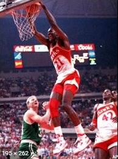
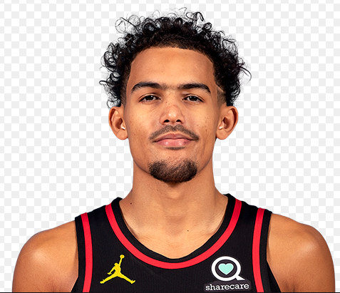

Hawks
The Atlanta Hawks are an American professional basketball team based in Atlanta. The Hawks compete in the National Basketball Association (NBA) as a member of the league's Eastern Conference Southeast Division. The team plays its home games at State Farm Arena.
The team's origins can be traced to the establishment of the Buffalo Bisons in 1946 in Buffalo, New York, a member of the National Basketball League (NBL) owned by Ben Kerner and Leo Ferris. After 38 days in Buffalo, the team moved to Moline, Illinois, where they were renamed the Tri-Cities Blackhawks. In 1949, they joined the NBA as part of the merger between the NBL and the Basketball Association of America (BAA), and briefly had Red Auerbach as coach. In 1951, Kerner moved the team to Milwaukee, where they changed their name to the Hawks. Kerner and the team moved again in 1955 to St. Louis, where they won their only NBA Championship in 1958 and qualified to play in the NBA Finals in 1957, 1960 and 1961. The Hawks played the Boston Celtics in all four of their trips to the NBA Finals. The St. Louis Hawks moved to Atlanta in 1968, when Kerner sold the franchise to Thomas Cousins and former Georgia Governor Carl Sanders.
The Hawks currently own the second-longest drought (behind the Sacramento Kings) of not winning an NBA championship at 60 seasons. The franchise's lone NBA championship, as well as all four NBA Finals appearances, occurred when the team was based in St. Louis. Meanwhile, they went 48 years without advancing past the second round of the playoffs in any format, until finally breaking through in 2015. However, the Hawks are one of only four NBA teams that have qualified to play in the NBA playoffs in 10 consecutive seasons in the 21st century. They achieved this feat between 2008 and 2017.
Jacques Dominique Wilkins is an American former professional basketball player. Wilkins was a nine-time NBA All-Star and is widely viewed as one of the best dunkers in NBA history, earning the nickname "the Human Highlight Reel". In 2006, Wilkins was inducted into the Naismith Memorial Basketball Hall of Fame.
Rayford Trae Young is an American professional basketball player for the Atlanta Hawks of the National Basketball Association. He played college basketball for the Oklahoma Sooners. In 2017, he tied the National Collegiate Athletic Association Division 1 single-game assists record with 22. Young became the only player to ever lead the NCAA in both points and assists in a single season. He was drafted by the Dallas Mavericks in the 2018 NBA draft with the fifth pick, but was later traded to the Atlanta Hawks, along with a future first-round pick, for the draft rights to Luka Dončić. He would join Dončić in a unanimous selection to the 2019 NBA All-Rookie First Team.